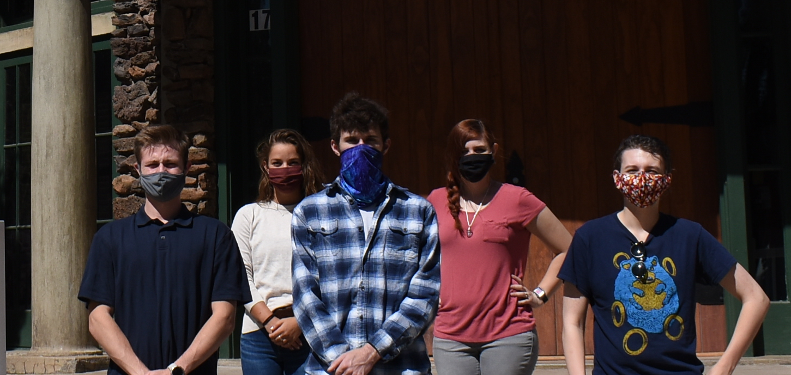

LOST EXPRES
A web application interface to the Lowell Observatory Solar Telescope
Our Group
- Austin Bacon
akb364@nau.edu - Olivia Thoney
opt4@nau.edu - Jared Cox
jac973@nau.edu - Brooke Caldwell
bec243@nau.edu - Ian McIlrath
ikm25@nau.edu
Volodymyr Saruta
vvs28@nau.edu
Our Client
Joe Llama has been working as an Assistant Astronomer at Lowell Observatory for four years, and is the team lead for the Lowell Observatory Solar Telescope, and the EXtreme PREcision Spectrograph
Our Team
Brooke Caldwell
Team Lead
Skills
- Code Review
- Web Programming
- Algorithms
Other Interests
- Astronomy
- Marvel Movies
Jared Cox
Architect
Skills
- Web Development
- Database Management
- GitHub
Other Interests
- Camping
- Super Smash Brothers
Austin Bacon
Meeting Recorder
Skills
- Technical Writing
- Javascript Programming
- Web Development
Other Interests
- Astronomy
- Hiking
Olivia Thoney
Customer Communicator
Skills
- Advanced Web Development with PHP
- Statistical Analysis
- SQL Programming
Other Interests
- Running
- Mountain Biking
Ian McIlrath
Release Manager
Skills
- Graphical/UI Design
- Web Design
- Maintaining Servers
Other Interests
- Drawing
- Leatherworking
Description
Our project is to create a web application for Joe Llama (Astronomer at Lowell Observatory) and his team. The Lowel Observatory Solar Telescope (LOST) is equipped with technology that can read the Radial Velocity of a star, and determine if there is a planet revolving around said star. The ultimate goal will be to find exoplanets similar to Earth, revolving around other stars in the galaxy. They don't have any concrete way to analyze this information, and therefore can't find outliers such as solar flares, star spots, plagues, and granules. This means that it is still being tested on the sun and has not been put into actual practice looking for exoplanets. This will be very useful as they don't currently have a way to digest, share, or organize the data that is being stored.
Requirements
Requirements Page
Under Construction
Technologies
Technology Page
Under Construction
Solutions
Solutions Page
Under Construction
Deliverables
Please click on any document link to view and download it:
Team Inventory
- a brief introduction of our team members and their experience
Team Standards
- an outline of our team expectations, including team roles, meetings times, technologies, etc.
Mini Introduction Video
- a quick presentation on our project
Tech Feasibility
- a detailed exploration and analysis of the technologies we are using
Design Review 1
- a detailed exploration and analysis of the technologies we are using
Requirements Document
- an in-depth document detailing all functionalities the website will need
Tech Demo Flight Plan
- a quick outline describing the demonstrations that will be developed for the website
Schedule
- the development schedule
Software Design Document
- a detailed explaination of how we are implementing the project
Design Review 2
- a detailed explaination of how we are implementing the project
Testing Plan
- a detailed explaination of how we plan on testing the project